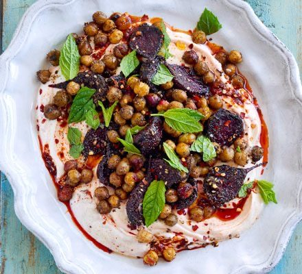

Roasted Beetroot with Za'atar, Chickpeas + Harissa Yoghurt
Beetroot and chickpeas roasted together under za'atar, sumac and cumin, piled onto harissa-swirled yoghurt.

Before you start heat the oven to 200°C fan.
Ingredients
Method
- Heat the oven to 200°C fan.
- Halve the 8 raw baby beetroots, or quarter them if you are using medium ones or bigger.
- Mix the 1 tbsp za'atar, 1 tbsp sumac and 1 tbsp ground cumin together in a small bowl.
- Tip the 400g tin of chickpeas and the beetroot onto a very large baking tray, or two smaller ones, and toss with the 2 tbsp olive oil.
- Season well with sea salt, sprinkle the mixed spices over and toss again.
- Roast at 200°C fan for 30 minutes, until crisp at the edges.
- Meanwhile, stir the 1 tsp lemon zest, 1 tsp lemon juice and a pinch of salt into the 200g Greek yoghurt.
- Swirl the 1 tbsp harissa paste through the yoghurt, then spread it thickly over a platter or shallow bowl.
- Top with the roasted beetroot and chickpeas, then scatter over the 1 tsp chilli flakes and the mint.
Source: https://www.bbcgoodfood.com/recipes/roasted-beetroot-zaatar-chickpeas-harissa-yogurt